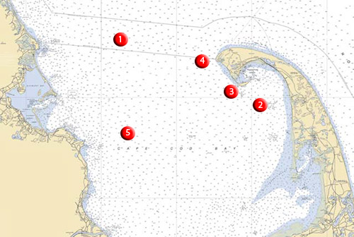

About Atlantic Bluefin Tuna
Among the species of bluefin tuna, there are three different stocks that are defined geographically. These three stocks are Atlantic, Pacific and Southern. The Atlantic bluefin (Thunnus thynnus) is divided into two subcategories as well: Eastern Atlantic and Western Atlantic. The difference between these two stocks and whether or not they cross paths during migration is still being researched today. This site will focus only on the Western stock of Atlantic bluefin tuna as this is the fish that swims in the waters off of New England.
The Atlantic bluefin tuna is by far the largest of the three species of bluefin tuna. Mature adults average around 7-8 feet long and weight around 500lbs. The IGFA world record Atlantic bluefin, which was caught off of Nova Scotia, weighed in at 1,497lbs and was 12 feet long. Further, it is accepted that this species can grow up to a staggering 2,000lbs, however an individual this size has never been recorded. In addition to its incredible size, the Atlantic bluefin is also very strong and fast. This species has been recorded swimming in short bursts of 46 mph. The Atlantic bluefin, like all other tuna species, is also warm blooded. This allows these fish to seek food in the cold waters of the North Atlantic.
Where

While this site is for saltwater anglers all over New England, it will focus on fishing locations most accessible from Massachusetts. Easily the most popular spot to target Atlantic bluefin, and arguably one of the most well known fishing spots around the world, is Stellwagen Bank. Stellwagen Bank is an underwater plateau situated at the mouth of Massachusetts Bay. It lies about 25 miles east of Boston and about 5 miles north of Provincetown. It stretches 19 miles north to south, and six miles east to west at its widest part near the southern end. On average, the bank is about 100 to 120 feet deep while the surrounding waters are at least 300 feet deep. The steep sides of the plateau cause deep-water currents to rise up when they hit the bank. This brings nutrients and minerals up from the bottom of the ocean and feeds the entire marine ecosystem. Over 130 species call the bank home at some point throughout the year, and mong these is the Atlantic bluefin tuna. These fish migrate to the bank every year due to its reliable source of food for them, which makes this one of the most productive fishing spots for the species.
When
Typically, bluefin tuna begin to arrive in the coastal waters of New England around early June. At this point in the year, these fish are still completing their migration north and often do not settle into particular areas for long periods of time, making them more difficult to hook. It isn't until around the middle of July when the fish begin to settle in in large numbers. The peak months for bluefin tuna fishing are August through September and sometimes even October. At this time of year, these fish are focused on feeding as much as possible before they begin their migration back down south. And despite colder water temperatures, there are still some tuna around in November and December as well.
How to Find Bluefin Tuna
How you choose to seach for your exact fishing spot will depend on the type of fishing you will be doing, which will be covered in more detail on the Techniques page. The biggest factor in finding bluefin tuna is finding forage. Wherever there are large amounts of bait fish, the bluefin will not be far behind. During the summer months, there is almost always large amounts of baitfish (herring, mackerel, menhaden and sand eels) present around the edges of Stellwagen Bank. Many bluefin are caught every year along the western edge of the bank in 120-150 feet of water. In addition to having a good idea of where the bait is, sometimes there are more obvious signs of where the bait is. Signs such as birds diving into the water, disturbances or splashes on the surface of the water, and large amounts of whales in an area all indicate that bait is in the area and tuna are close by. It is always important to keep an eye out for these signs while out fishing.
Other Spots to Find Bluefin Tuna
While Stellwagen Bank is one of the most popular spots to fish for bluefin tuna, there are many other spots within Cape Cod Bay that prove to be successful. The map above shows some of these locations. Move your mouse over the map to see where these locations in more detail. Click the button below to see a list of the names of these spots.